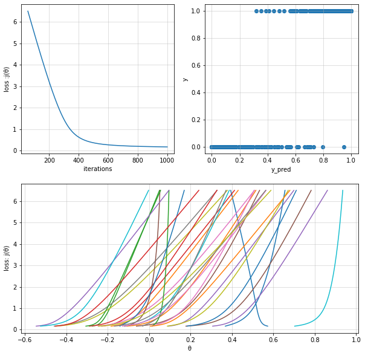
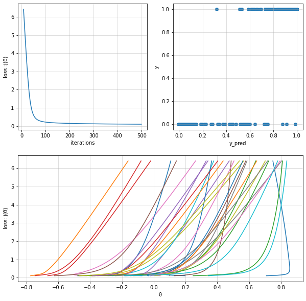
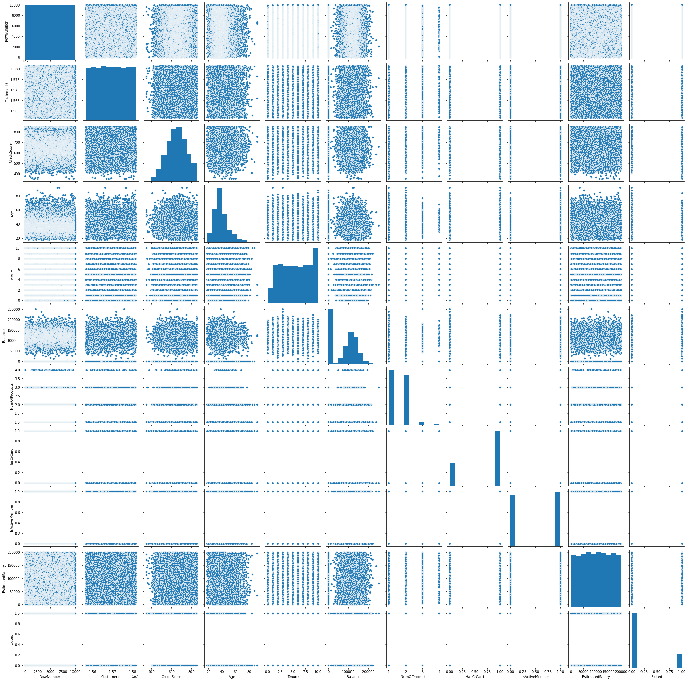
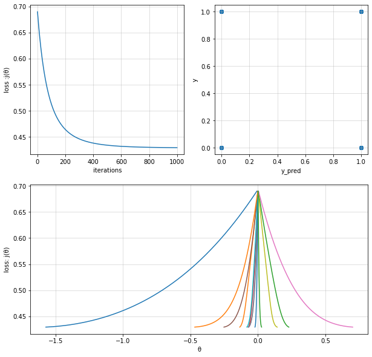
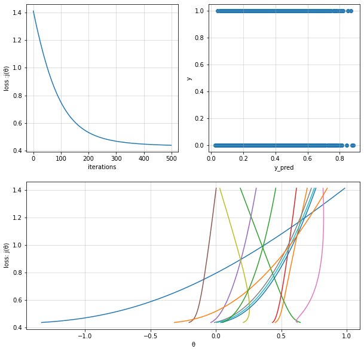

Logistic Regression¶
[1]:
import numpy as np
import pandas as pd
import matplotlib.pyplot as plt
import seaborn as sns
%matplotlib inline
[2]:
from sklearn.datasets import load_breast_cancer
[3]:
dataset = load_breast_cancer()
[4]:
df = pd.DataFrame(data=dataset.data,columns=dataset.feature_names)
df["target"] = dataset.target
df.head()
[4]:
| mean radius | mean texture | mean perimeter | mean area | mean smoothness | mean compactness | mean concavity | mean concave points | mean symmetry | mean fractal dimension | ... | worst texture | worst perimeter | worst area | worst smoothness | worst compactness | worst concavity | worst concave points | worst symmetry | worst fractal dimension | target | |
|---|---|---|---|---|---|---|---|---|---|---|---|---|---|---|---|---|---|---|---|---|---|
| 0 | 17.99 | 10.38 | 122.80 | 1001.0 | 0.11840 | 0.27760 | 0.3001 | 0.14710 | 0.2419 | 0.07871 | ... | 17.33 | 184.60 | 2019.0 | 0.1622 | 0.6656 | 0.7119 | 0.2654 | 0.4601 | 0.11890 | 0 |
| 1 | 20.57 | 17.77 | 132.90 | 1326.0 | 0.08474 | 0.07864 | 0.0869 | 0.07017 | 0.1812 | 0.05667 | ... | 23.41 | 158.80 | 1956.0 | 0.1238 | 0.1866 | 0.2416 | 0.1860 | 0.2750 | 0.08902 | 0 |
| 2 | 19.69 | 21.25 | 130.00 | 1203.0 | 0.10960 | 0.15990 | 0.1974 | 0.12790 | 0.2069 | 0.05999 | ... | 25.53 | 152.50 | 1709.0 | 0.1444 | 0.4245 | 0.4504 | 0.2430 | 0.3613 | 0.08758 | 0 |
| 3 | 11.42 | 20.38 | 77.58 | 386.1 | 0.14250 | 0.28390 | 0.2414 | 0.10520 | 0.2597 | 0.09744 | ... | 26.50 | 98.87 | 567.7 | 0.2098 | 0.8663 | 0.6869 | 0.2575 | 0.6638 | 0.17300 | 0 |
| 4 | 20.29 | 14.34 | 135.10 | 1297.0 | 0.10030 | 0.13280 | 0.1980 | 0.10430 | 0.1809 | 0.05883 | ... | 16.67 | 152.20 | 1575.0 | 0.1374 | 0.2050 | 0.4000 | 0.1625 | 0.2364 | 0.07678 | 0 |
5 rows × 31 columns
[5]:
X = df[dataset.feature_names].values
y = df["target"].values.reshape(-1,1)
X.shape, y.shape
[5]:
((569, 30), (569, 1))
[6]:
def linear_model_format_X(X):
if len(X.shape) == 1:
X = X.copy().reshape(-1,1)
return np.hstack(tup= ( np.ones(shape=(X.shape[0],1)) , X ) )
Cost Function¶
[7]:
def entropy_cost_func(y_pred,y):
part_1 = y * np.log(y_pred)
part_2 = (1 - y) * np.log(1 - y_pred)
cost = ( -1 / y_pred.shape[0] ) * np.sum(part_1 + part_2)
return cost
Sigmoid Function¶
[8]:
def sigmoid(z):
return 1 / (1 + np.exp(-z))
Gradient Descent Algorithm¶
[53]:
def logistic_regression_fit(X_i,y,alpha = 0.01,iterations = 10000):
X = linear_model_format_X(X_i)
n = X.shape[1]
m = y.shape[0]
theta = np.random.rand(1,n)
print("random initial θ value :",theta)
cost_history = []
theta_history = []
for iteration in range(iterations):
# calculate y_pred
y_pred = sigmoid(X @ theta.T) # (m,1) = (m,n) * (n,1)
# new θ to replace old θ
new_theta = np.zeros_like(theta)
# simultaneous operation
new_theta = theta - (
alpha * np.sum( (y_pred - y ) * X , axis = 0 ) * (1/m)
)
if np.isnan(np.sum(new_theta)) or np.isinf(np.sum(new_theta)):
print("breaking. found inf or nan.")
break
# override new θ
theta = new_theta
# calculate cost to put in history
cost = entropy_cost_func( sigmoid(X @ theta.T), y)
cost_history.append(cost)
# calcualted theta in history
theta_history.append(theta[0])
y_pred = sigmoid(X @ theta.T)
return X,y,y_pred,theta,theta_history,cost_history
[10]:
from sklearn.preprocessing import StandardScaler
from sklearn.metrics import confusion_matrix,accuracy_score
scaler = StandardScaler()
X_i = df[dataset.feature_names].values
y = df["target"].values.reshape(-1,1)
X_scaled = scaler.fit_transform(X_i)
X,y,y_pred,theta,theta_history,cost_history = logistic_regression_fit(
X_i=X_scaled,
y=y,
alpha=0.003,
iterations=1000
)
print("Fit theta :",theta)
print(f"""
Confusion Matrix :
{confusion_matrix(y,y_pred>0.5)}
Accuracy Score :
{accuracy_score(y,y_pred>0.5)}
""")
fig = plt.figure(figsize=(10,10))
ax = fig.add_subplot(2,2,1)
ax.set(
xlabel="iterations",
ylabel="loss :j(θ)"
)
ax.plot(cost_history)
ax.grid(alpha=0.5)
ax = fig.add_subplot(2,2,2)
ax.set(
xlabel="y_pred",
ylabel="y"
)
ax.scatter(y_pred,y)
ax.grid(alpha=0.5)
ax = fig.add_subplot(2,2,(3,4))
ax.set(
ylabel="loss: j(θ)",
xlabel="θ"
)
ax.plot(theta_history,cost_history)
ax.grid(alpha=0.5)
plt.show()
random initial θ value : [[0.3576646 0.53958774 0.10850964 0.5250561 0.80609266 0.60385399
0.61962548 0.44928318 0.50598448 0.45210756 0.67919445 0.60685172
0.09844742 0.41804907 0.94736686 0.05573498 0.57776977 0.43239714
0.7550938 0.94571158 0.20910021 0.79688015 0.11840221 0.35933478
0.20626876 0.85741615 0.6695789 0.67703857 0.71845608 0.06580761
0.77958159]]
<ipython-input-7-5ba05776049f>:4: RuntimeWarning: divide by zero encountered in log
part_2 = (1 - y) * np.log(1 - y_pred)
Fit theta : [[ 0.57230566 -0.18433343 -0.27485018 -0.22954867 0.09293785 -0.06174021
-0.24666323 -0.45909224 -0.45174748 -0.11975429 0.36791837 -0.10776518
0.01310096 -0.28954587 0.30671002 -0.1177474 0.01646769 -0.03148738
0.08769365 0.70292597 -0.14143012 0.00536838 -0.30596402 -0.45373345
-0.54600324 0.1774553 -0.1296766 -0.16844 -0.24407005 -0.52536972
0.18275308]]
Confusion Matrix :
[[197 15]
[ 6 351]]
Accuracy Score :
0.9630931458699473

[60]:
np.log(1 - y_pred)
[60]:
array([[-0.20299164],
[-0.27128834],
[-0.22914761],
...,
[-0.16609544],
[-0.1036728 ],
[-1.06645071]])
Logistic Regression with Regularization¶
[54]:
def logistic_regression_with_reg_fit(X_i,y,alpha = 0.01,iterations = 10000,penalty=0.1):
X = linear_model_format_X(X_i)
n = X.shape[1]
m = y.shape[0]
theta = np.random.rand(1,n)
print("random initial θ value :",theta)
cost_history = []
theta_history = []
for iteration in range(iterations):
# calculate y_pred
y_pred = sigmoid(X @ theta.T) # (m,1) = (m,n) * (n,1)
# new θ to replace old θ
new_theta = np.zeros_like(theta)
# simultaneous operation
new_theta = theta - (
alpha * np.sum( (y_pred - y ) * X , axis = 0 ) * (1/m)
) - (penalty * theta * (1 / m) )
if np.isnan(np.sum(new_theta)) or np.isinf(np.sum(new_theta)):
print("breaking. found inf or nan.")
break
# override new θ
theta = new_theta
# calculate cost to put in history
cost = entropy_cost_func( sigmoid(X @ theta.T), y)
cost_history.append(cost)
# calcualted theta in history
theta_history.append(theta[0])
y_pred = sigmoid(X @ theta.T)
return X,y,y_pred,theta,theta_history,cost_history
[12]:
from sklearn.preprocessing import StandardScaler
from sklearn.metrics import confusion_matrix,accuracy_score
scaler = StandardScaler()
X_i = df[dataset.feature_names].values
y = df["target"].values.reshape(-1,1)
X_scaled = scaler.fit_transform(X_i)
X,y,y_pred,theta,theta_history,cost_history = logistic_regression_with_reg_fit(
X_i=X_scaled,
y=y,
alpha=0.03,
iterations=500
)
print("Fit theta :",theta)
print(f"""
Confusion Matrix :
{confusion_matrix(y,y_pred>0.5)}
Accuracy Score :
{accuracy_score(y,y_pred>0.5)}
""")
fig = plt.figure(figsize=(10,10))
ax = fig.add_subplot(2,2,1)
ax.set(
xlabel="iterations",
ylabel="loss :j(θ)"
)
ax.plot(cost_history)
ax.grid(alpha=0.5)
ax = fig.add_subplot(2,2,2)
ax.set(
xlabel="y_pred",
ylabel="y"
)
ax.scatter(y_pred,y)
ax.grid(alpha=0.5)
ax = fig.add_subplot(2,2,(3,4))
ax.set(
ylabel="loss: j(θ)",
xlabel="θ"
)
ax.plot(theta_history,cost_history)
ax.grid(alpha=0.5)
plt.show()
random initial θ value : [[0.69797365 0.00684083 0.74572601 0.15430033 0.6401997 0.6874392
0.43627835 0.99517944 0.76571511 0.47916801 0.40071367 0.79190814
0.82797632 0.06334998 0.46430382 0.49991944 0.61878241 0.68588831
0.83498746 0.85834201 0.17122925 0.61743687 0.83480799 0.58742252
0.51343845 0.25949421 0.95972129 0.8965036 0.74198947 0.88797921
0.66820595]]
<ipython-input-7-5ba05776049f>:4: RuntimeWarning: divide by zero encountered in log
part_2 = (1 - y) * np.log(1 - y_pred)
Fit theta : [[ 0.70830948 -0.77382823 -0.40228974 -0.66604392 -0.17648983 -0.02316578
-0.42234676 -0.14811222 -0.37324985 -0.26070558 0.19696735 -0.12783323
0.24761635 -0.74632678 -0.28801001 0.12927267 0.04090683 0.10138608
0.00734453 0.34306628 -0.07384633 -0.35352387 -0.47754958 -0.3887874
-0.38384573 -0.62406174 -0.02015113 -0.24191673 -0.46949253 -0.18392407
-0.03394854]]
Confusion Matrix :
[[196 16]
[ 1 356]]
Accuracy Score :
0.9701230228471002

Comparing With Data¶
[24]:
import numpy as np
import pandas as pd
import matplotlib.pyplot as plt
import seaborn as sns
%matplotlib inline
from sklearn.model_selection import train_test_split
from sklearn.preprocessing import StandardScaler,MinMaxScaler,LabelEncoder,OneHotEncoder
from sklearn.metrics import confusion_matrix,plot_confusion_matrix,accuracy_score
from sklearn.compose import ColumnTransformer
[25]:
churn_df = pd.read_csv("./dataset/ChurnClassification.csv")
[23]:
sns.pairplot(churn_df)
[23]:
<seaborn.axisgrid.PairGrid at 0x7f193c2602e0>

[40]:
churn_df['Exited'].value_counts()
[40]:
0 7963
1 2037
Name: Exited, dtype: int64
[44]:
feature_col = ['CreditScore','Geography','Gender', 'Age','Tenure','Balance','NumOfProducts','HasCrCard','IsActiveMember','EstimatedSalary']
target_col = ['Exited']
X = churn_df[feature_col].values
y = churn_df[target_col].values
X,y
[44]:
(array([[619, 'France', 'Female', ..., 1, 1, 101348.88],
[608, 'Spain', 'Female', ..., 0, 1, 112542.58],
[502, 'France', 'Female', ..., 1, 0, 113931.57],
...,
[709, 'France', 'Female', ..., 0, 1, 42085.58],
[772, 'Germany', 'Male', ..., 1, 0, 92888.52],
[792, 'France', 'Female', ..., 1, 0, 38190.78]], dtype=object),
array([[1],
[0],
[1],
...,
[1],
[1],
[0]]))
[45]:
le_1 = LabelEncoder()
le_2 = LabelEncoder()
X[:, 1] = le_1.fit_transform(X[:, 1])
X[:, 2] = le_1.fit_transform(X[:, 2])
X
[45]:
array([[619, 0, 0, ..., 1, 1, 101348.88],
[608, 2, 0, ..., 0, 1, 112542.58],
[502, 0, 0, ..., 1, 0, 113931.57],
...,
[709, 0, 0, ..., 0, 1, 42085.58],
[772, 1, 1, ..., 1, 0, 92888.52],
[792, 0, 0, ..., 1, 0, 38190.78]], dtype=object)
[46]:
ct = ColumnTransformer(
transformers=[('encoder', OneHotEncoder(), [1])], remainder='passthrough')
X = np.array(ct.fit_transform(X))
X
[46]:
array([[1.0, 0.0, 0.0, ..., 1, 1, 101348.88],
[0.0, 0.0, 1.0, ..., 0, 1, 112542.58],
[1.0, 0.0, 0.0, ..., 1, 0, 113931.57],
...,
[1.0, 0.0, 0.0, ..., 0, 1, 42085.58],
[0.0, 1.0, 0.0, ..., 1, 0, 92888.52],
[1.0, 0.0, 0.0, ..., 1, 0, 38190.78]], dtype=object)
[47]:
X_train, X_test, y_train, y_test = train_test_split(
X, y, test_size=0.2, random_state=0)
ss = StandardScaler()
X_train = ss.fit_transform(X_train)
X_test = ss.transform(X_test)
Logisitic Regression without Regularization¶
[56]:
X,y,y_pred,theta,theta_history,cost_history = logistic_regression_fit(
X_i=X_train,
y=y_train,
alpha=0.03,
iterations=1000
)
print("Fit theta :",theta)
print(f"""
Confusion Matrix :
{confusion_matrix(y,y_pred>0.5)}
Accuracy Score :
{accuracy_score(y,y_pred>0.5)}
""")
fig = plt.figure(figsize=(10,10))
ax = fig.add_subplot(2,2,1)
ax.set(
xlabel="iterations",
ylabel="loss :j(θ)"
)
ax.plot(cost_history)
ax.grid(alpha=0.5)
ax = fig.add_subplot(2,2,2)
ax.set(
xlabel="y_pred",
ylabel="y"
)
ax.scatter(y_pred>0.5,y)
ax.grid(alpha=0.5)
ax = fig.add_subplot(2,2,(3,4))
ax.set(
ylabel="loss: j(θ)",
xlabel="θ"
)
ax.plot(theta_history,cost_history)
ax.grid(alpha=0.5)
plt.show()
random initial θ value : [[7.86543204e-04 3.79187592e-04 8.71098499e-04 7.66669302e-04
6.29556657e-04 6.82673472e-04 9.09442040e-04 6.89012375e-04
2.18336535e-05 6.99527770e-05 9.18108322e-04 4.91240622e-04
9.33037714e-04]]
Fit theta : [[-1.57105594 -0.13481835 0.2290237 -0.07001283 -0.06807948 -0.25177126
0.70196321 -0.0737086 0.14268002 -0.08233166 -0.02200612 -0.46802356
0.02700149]]
Confusion Matrix :
[[6150 218]
[1306 326]]
Accuracy Score :
0.8095

[18]:
X,y,y_pred,theta,theta_history,cost_history = logistic_regression_with_reg_fit(
X_i=X_train,
y=y_train,
alpha=0.03,
iterations=500
)
print("Fit theta :",theta)
print(f"""
Confusion Matrix :
{confusion_matrix(y,y_pred>0.5)}
Accuracy Score :
{accuracy_score(y,y_pred>0.5)}
""")
fig = plt.figure(figsize=(10,10))
ax = fig.add_subplot(2,2,1)
ax.set(
xlabel="iterations",
ylabel="loss :j(θ)"
)
ax.plot(cost_history)
ax.grid(alpha=0.5)
ax = fig.add_subplot(2,2,2)
ax.set(
xlabel="y_pred",
ylabel="y"
)
ax.scatter(y_pred,y)
ax.grid(alpha=0.5)
ax = fig.add_subplot(2,2,(3,4))
ax.set(
ylabel="loss: j(θ)",
xlabel="θ"
)
ax.plot(theta_history,cost_history)
ax.grid(alpha=0.5)
plt.show()
random initial θ value : [[0.99784393 0.69986893 0.18247394 0.61670082 0.30989424 0.00311514
0.81800336 0.73252058 0.02594731 0.75569084 0.7675468 0.85661779
0.45894821]]
Fit theta : [[-1.33231147 0.45243314 0.64478066 0.43254155 -0.03914994 -0.20526912
0.62178916 -0.01168205 0.20918159 0.00592753 0.03825105 -0.31734554
0.05257717]]
Confusion Matrix :
[[6137 231]
[1316 316]]
Accuracy Score :
0.806625

[ ]: